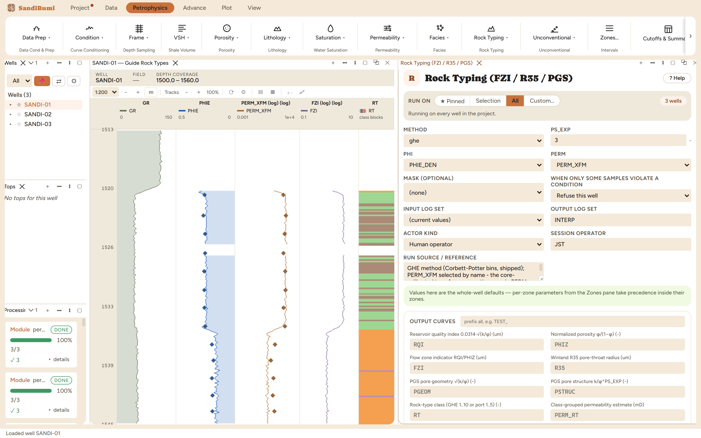

Per-sample rock-typing indicators from porosity and permeability: the FZI family, the Winland R35 pore-throat radius, and the Permadi-Susilo geometric/structural pair. The rock-type class comes from the chosen method's own binning, and the class-grouped permeability estimate uses each class's geometric-mean FZI.
RQI = 0.0314·√(k/φ), PHIZ = φ/(1−φ), FZI = RQI/PHIZ R35 = 10^(0.732 + 0.588·log₁₀k − 0.864·log₁₀φ%) PGEOM = √(k/φ), PSTRUC = k/φ^PS_EXP PERM_RT = 1014.24·FZI_mean(RT)²·φ³/(1−φ)²
Author-year as this project's records hold them; the constants were re-verified against the records on 2026-07-22.
Per-sample rock-typing indicators from porosity and permeability: the Amaefule RQI/FZI family, the Winland R35 pore-throat radius, and the Permadi-Susilo geometric/structural pair, with the rock-type class from the chosen method's own binning, here GHE, the Corbett-Potter fixed FZI bin series.
Both inputs resolve by name, and the permeability slot is where a silent mistake
lives: every permeability module also writes the generic PERM, so that
name belongs to whichever module ran last. This run selects
PERM_XFM by name (the core-calibrated transform), and the reference field
says so. (The first pass of this walkthrough consumed the generic slot, which by
then held the Coates estimate: the FZI median moved from 3.8 to 0.8 when the input
was corrected. Same wells, same button, different rock types. That is how much the
permeability choice owns this module's answer.)

On these wells: 3 clean. Sand-interval medians: FZI 0.79, R35 0.79 µm. The GHE classes land mostly in GHE 4–7 across the section. The class-grouped permeability estimate PERM_RT rebuilds k from each class's geometric-mean FZI: a useful smoothed law per class, and a useful discrepancy detector where it diverges from the input permeability. The PS_EXP exponent stays at its cited default 3 (verified against the project's constants record).
Everything below is generated from the same manifest the application builds this module’s pane from — descriptions, defaults, sources, ranges and pre-run checks here are exactly what the running application enforces.
Per-sample rock-typing indicators from porosity and permeability. Writes RQI = 0.0314·√(k/φ), PHIZ = φ/(1−φ), FZI = RQI/PHIZ (Amaefule 1993); Winland R35 = 10^(0.732 + 0.588·log10 k − 0.864·log10 φ%) (Kolodzie 1980); and the Permadi-Susilo PGS pair PGEOM = √(k/φ), PSTRUC = k/φ^PS_EXP. RT is the rock-type class from the chosen METHOD — GHE fixed FZI bins (Corbett-Potter 2004) or Winland port classes (nano..mega). PERM_RT is the class-grouped permeability estimate k = 1014.24·FZI_mean(RT)²·φ³/(1−φ)² using each class's GEOMETRIC-MEAN FZI over this well. k in mD, φ in v/v; samples with φ∉(0,1) or k≤0 stay MISSING. GHE bins follow the Corbett-Potter 2004 ×2 series and PGS uses √(k/φ) / k/φ³ (verified 2026-07-22).
| Role | Description | Resolves to | Required | Notes |
|---|---|---|---|---|
| PHI | Effective porosity | PHIE | yes | — |
| PERM | Permeability | PERM | yes | — |
Whole-well defaults; per-zone values from the Zones pane take precedence inside their zones (except where a parameter is marked one-value-per-well).
PGS pore-structure exponent (k/φ^PS_EXP)
Rock-type class basis
ghewinland_portghe| Name | Description |
|---|---|
| RQI | Reservoir quality index 0.0314·√(k/φ) |
| PHIZ | Normalized porosity φ/(1−φ) |
| FZI | Flow zone indicator RQI/PHIZ |
| R35 | Winland R35 pore-throat radius |
| PGEOM | PGS pore geometry √(k/φ) |
| PSTRUC | PGS pore structure k/φ^PS_EXP |
| RT | Rock-type class (GHE 1..10 or port 1..5) |
| PERM_RT | Class-grouped permeability estimate |